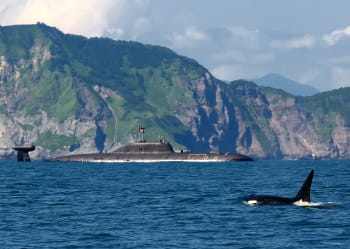
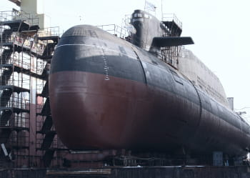
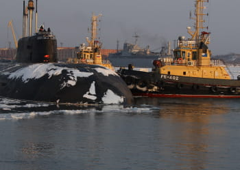
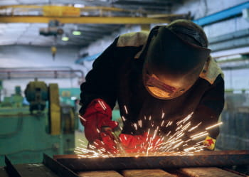

Новости / события
Новости Все новости-

Дальневосточный завод «Звезда»
Строительство доккамеры, первые суда
10.03.21
вытаскивали на берег бульдозеты. -

Дальневосточный завод «Звезда»
Строительство доккамеры, первые суда
10.03.21
вытаскивали на берег бульдозеты. -

Дальневосточный завод «Звезда»
Строительство доккамеры, первые суда
10.03.21
вытаскивали на берег бульдозеты. -

Дальневосточный завод «Звезда»
Строительство доккамеры, первые суда
10.03.21
вытаскивали на берег бульдозеты.
О предприятии
"Акционерное общество Дальневосточный завод «Звезда» - ведущее предприятие по ремонту подводных лодок Тихоокеанского флота и единственное на Дальнем Востоке специализирующееся на ремонте, переоборудованию и модернизации кораблей атомных подводных ракетоносцев.
Завод "Звезда" - сложный, хорошо оснащенный комплекс, обладающий высоким техническим и производственным потенциалом, который позволяет качественно и своевременно выполнять работы по всем основным направлениям деятельности предприятия.
В состав завода входят цеха основного производства: доково-корпусный цех, цех агрегатного ремонта судового оборудования, инструментально-механический, ремонтно-монтажно-сдаточный, малярно-изоляционно-гуммировочный, трубомедницкий, цех обращения
с радиоактивными отходами и отработавшим ядерным топливом, а также центральная заводская лаборатория, энерголаборатория и лаборатория сварки, аттестованные, аккредитованные и лицензированные органами Госстандарта России, Госгортехнадзора РФ, Российского Морского Регистра Судоходства и Госатомнадзора России.
На заводе работает высококвалифицированный профессиональный
коллектив, насчитывающий сегодня более трёх тысяч человек. Накопленный
богатый опыт
и применение передовых технологий позволяют АО ДВЗ "Звезда" использовать технологические возможности и развитую инфраструктуру вспомогательных производств
для успешного выполнения ремонта кораблей и судов, строительства гражданских судов, изготовления различных видов металлоконструкций, разнообразной продукции, как судового, так и общего машиностроения, нестандартного оборудования, оснастки
и инструмента.
Завод располагает
-
Акваторией с развитыми причальными стенками общей протяженностью 1600 м, оборудованными портальными кранами, грузоподъемностью 10, 32 и 80 т
-
Уникальным судоподъемным комплексом включающим передаточный плавдок "Паллада"
-
Уникальным комплексом испытательных стендов
-
Эллингом, состоящим из двух пролетов с бытовыми пристройками